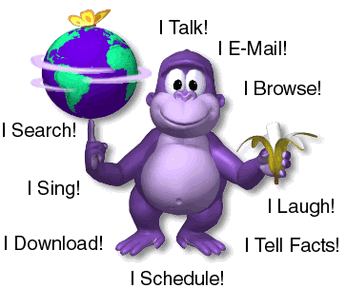

bonzi buddy
Bonzi Buddy
était un assistant virtuel de bureau gratuit créé par Joe et Jay Bonzi.
Au choix de l'utilisateur, il partageait des blagues et des faits,
gérait les téléchargements, chantait des chansons et parlait, entre autres fonctions,
car il utilisait Microsoft Agent.
BonziBuddy a été décrit comme un logiciel espion[1] et un logiciel publicitaire[2] et a été abandonné en 2004 après
que la société à l'origine de ce logiciel ait fait l'objet de poursuites judiciaires
concernant le logiciel et ait été condamnée à payer des amendes.
[3] Le site Web de Bonzi est resté ouvert après l'arrêt de BonziBuddy, mais a été fermé fin 2008.
